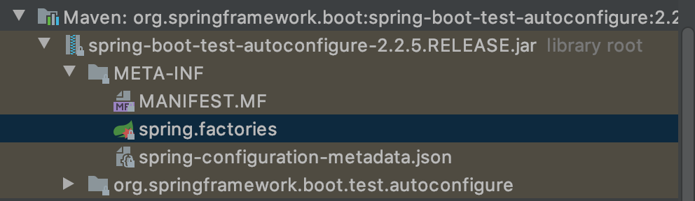

<!DOCTYPE html>


<html lang="en">


<head>
  <meta charset="utf-8" />
    
  <meta name="viewport" content="width=device-width, initial-scale=1, maximum-scale=1" />
  <title>
    SpringBoot-原理初探 |  
  </title>
  <meta name="generator" content="hexo-theme-ayer">
  
  <link rel="shortcut icon" href="/favicon.ico" />
  
  <link rel="stylesheet" href="/dist/main.css">
  <link rel="stylesheet" href="https://cdn.jsdelivr.net/gh/Shen-Yu/cdn/css/remixicon.min.css">
  <link rel="stylesheet" href="/css/custom.css">
  
  <script src="https://cdn.jsdelivr.net/npm/pace-js@1.0.2/pace.min.js"></script>
  
  

  

  <link rel="stylesheet" href="https://cdn.jsdelivr.net/gh/highlightjs/cdn-release@latest/build/styles/vs2015.min.css"><!- highlight.js ->
  <script src="https://cdn.jsdelivr.net/gh/highlightjs/cdn-release@latest/build/highlight.min.js"></script>
  <script>
    hljs.initHighlightingOnLoad();
  </script>
</head>

</html>


<body>
  <div id="app">
    
      
    <main class="content on">
      <section class="outer">
  <article
  id="post-SpringBoot-原理初探"
  class="article article-type-post"
  itemscope
  itemprop="blogPost"
  data-scroll-reveal
>
  <div class="article-inner">
    
    <header class="article-header">
       
<h1 class="article-title sea-center" style="border-left:0" itemprop="name">
  SpringBoot-原理初探
</h1>
 

    </header>
     
    <div class="article-meta">
      <a href="/2020/03/23/SpringBoot-%E5%8E%9F%E7%90%86%E5%88%9D%E6%8E%A2/" class="article-date">
  <time datetime="2020-03-23T07:37:04.000Z" itemprop="datePublished">2020-03-23</time>
</a> 
  <div class="article-category">
    <a class="article-category-link" href="/categories/%E5%90%8E%E7%AB%AF/">后端</a>
  </div>

  
<div class="word_count">
    <span class="post-time">
        <span class="post-meta-item-icon">
            <i class="ri-quill-pen-line"></i>
            <span class="post-meta-item-text"> Word count:</span>
            <span class="post-count">1.5k</span>
        </span>
    </span>

    <span class="post-time">
        &nbsp; | &nbsp;
        <span class="post-meta-item-icon">
            <i class="ri-book-open-line"></i>
            <span class="post-meta-item-text"> Reading time≈</span>
            <span class="post-count">7 min</span>
        </span>
    </span>
</div>
 
    </div>
      
    <div class="tocbot"></div>


  
    <div class="article-entry" itemprop="articleBody">
       
  <h2 id="自动配置"><a href="#自动配置" class="headerlink" title="自动配置"></a>自动配置</h2><h4 id="启动器"><a href="#启动器" class="headerlink" title="启动器"></a>启动器</h4><pre><code class="xml">&lt;dependency&gt;
    &lt;groupId&gt;org.springframework.boot&lt;/groupId&gt;
    &lt;artifactId&gt;spring-boot-starter&lt;/artifactId&gt;
&lt;/dependency&gt;</code></pre>
<p>是SpringBoot的启动场景</p>
<p>比如使用<code>spring-boot-starter-web</code>，他会帮我们自动导入web环境所有的依赖</p>
<p>SpringBoot会将所有的场景都变成一个个的启动器，我们要使用什么功能就只需要引入对应的启动器即可</p>
<p><a href="https://docs.spring.io/spring-boot/docs/current/reference/html/using-spring-boot.html#using-boot-starter" target="_blank" rel="noopener">Starters 启动器列表</a></p>
<h4 id="注解"><a href="#注解" class="headerlink" title="注解"></a>注解</h4><pre><code>@SpringBootConfiguration: springboot的配置
  @Configuration: Spring的配置类
    @Component: 是Spring的组件
@EnableAutoConfiguration: 自动配置
  @AutoConfigurationPackage: 自动配置包
    @Import(AutoConfigurationPackages.Registrar.class): 自动配置包注册
  @Import(AutoConfigurationImportSelector.class): 自动配置导入选择</code></pre><p>org/springframework/boot/autoconfigure/AutoConfigurationImportSelector.java</p>
<pre><code class="java">    protected AutoConfigurationEntry getAutoConfigurationEntry(AutoConfigurationMetadata autoConfigurationMetadata,
            AnnotationMetadata annotationMetadata) {
        //...
    // 获取所有配置
        List&lt;String&gt; configurations = getCandidateConfigurations(annotationMetadata, attributes);
        //...
    }


  protected List&lt;String&gt; getCandidateConfigurations(AnnotationMetadata metadata, AnnotationAttributes attributes) {
        List&lt;String&gt; configurations = SpringFactoriesLoader.loadFactoryNames(getSpringFactoriesLoaderFactoryClass(),
                getBeanClassLoader());
        Assert.notEmpty(configurations, &quot;No auto configuration classes found in META-INF/spring.factories. If you &quot;
                + &quot;are using a custom packaging, make sure that file is correct.&quot;);
        return configurations;
  }</code></pre>
<p>META-INF/spring.factories: 自动配置的核心文件</p>


<p>org/springframework/core/io/support/SpringFactoriesLoader.java</p>
<pre><code class="java">    public static List&lt;String&gt; loadFactoryNames(Class&lt;?&gt; factoryType, @Nullable ClassLoader classLoader) {
        String factoryTypeName = factoryType.getName();
        return loadSpringFactories(classLoader).getOrDefault(factoryTypeName, Collections.emptyList());
    }

    private static Map&lt;String, List&lt;String&gt;&gt; loadSpringFactories(@Nullable ClassLoader classLoader) {
        MultiValueMap&lt;String, String&gt; result = cache.get(classLoader);
        if (result != null) {
            return result;
        }

        try {
            Enumeration&lt;URL&gt; urls = (classLoader != null ?
                    classLoader.getResources(FACTORIES_RESOURCE_LOCATION) : // FACTORIES_RESOURCE_LOCATION = &quot;META-INF/spring.factories&quot;
                    ClassLoader.getSystemResources(FACTORIES_RESOURCE_LOCATION));
            result = new LinkedMultiValueMap&lt;&gt;();
            while (urls.hasMoreElements()) { // 判断有没有更多的元素
                URL url = urls.nextElement();
                UrlResource resource = new UrlResource(url);
                Properties properties = PropertiesLoaderUtils.loadProperties(resource); // 所有的资源加载到配置类中
                for (Map.Entry&lt;?, ?&gt; entry : properties.entrySet()) {
                    String factoryTypeName = ((String) entry.getKey()).trim();
                    for (String factoryImplementationName : StringUtils.commaDelimitedListToStringArray((String) entry.getValue())) {
                        result.add(factoryTypeName, factoryImplementationName.trim());
                    }
                }
            }
            cache.put(classLoader, result);
            return result;
        }
        catch (IOException ex) {
            throw new IllegalArgumentException(&quot;Unable to load factories from location [&quot; +
                    FACTORIES_RESOURCE_LOCATION + &quot;]&quot;, ex);
        }
    }
</code></pre>
<p>结论：springboot所有的自动配置都是在启动的时候扫描并加载：<code>spring.factories</code>中的所有的自动配置类，但是不一定全部都生效，要判断条件是否成立，只要导入了对应的start，就有对应的启动器了，有了启动器，我们自动装配就会生效，然后就配置成功了</p>
<ol>
<li>springboot在启动的时候从类路径下<code>META-INF/spring.factories</code>获取指定的值</li>
<li>将这些配置的类导入容器，自动配置就会生效，帮我们进行自动配置</li>
<li>以前需要我们配置的东西，现在springboot帮我们做了</li>
<li>整合javaEE，解决方案和自动配置的东西都在<code>spring-boot-test-autoconfigure-2.2.5.RELEASE.jar</code>这个包下</li>
<li>它会把所有需要导入的组件，以类名的方式返回，这些组件就会被添加到容器了</li>
<li><code>spring.factories</code>中存在许多xxxAutoConfiguration的文件(@Bean)，就是这些类给容器中导入类这个场景需要的所有组件，并自动配置</li>
<li>有了自动配置类(@Configuration)，免去了我们手动配置</li>
</ol>
<h4 id="application配置文件"><a href="#application配置文件" class="headerlink" title="application配置文件"></a>application配置文件</h4><p>如何知道可以在配置文件中配置哪些项目？</p>
<ol>
<li><code>META-INF/spring.factories</code>下存在被加载的配置类</li>
<li>以<code>HttpEncodingAutoConfiguration</code>为例，进入<code>HttpEncodingAutoConfiguration.java</code></li>
<li><code>@EnableConfigurationProperties(HttpProperties.class)</code>可以看到该类关联了<code>HttpProperties.class</code>做为Properties</li>
<li>该类里面的属性为<code>@ConfigurationProperties(prefix = &quot;spring.http&quot;)</code>配置的前缀后的属性</li>
</ol>
<pre><code class="java">//从配置文件中获取指定的值和bean的属性进行绑定
@ConfigurationProperties(prefix = &quot;spring.http&quot;)
public class HttpProperties {
    //...
}</code></pre>
<h2 id="主启动类运行原理"><a href="#主启动类运行原理" class="headerlink" title="主启动类运行原理"></a>主启动类运行原理</h2><pre><code class="java">@SpringBootApplication // 标志该类为springboot启动类
public class SpringBootDemoApplication {

    public static void main(String[] args) {
    // 该方法返回一个ConfigurableApplicationContext对象
        SpringApplication.run(SpringBootDemoApplication.class, args);
    }

}</code></pre>
<p>类<code>SpringApplication</code>做了以下事情：</p>
<ol>
<li>推动应用的类型是普通项目还是web项目</li>
<li>查找并加载所有可用的初始化器，设置到initializers属性中</li>
<li>找出所有的应用程序监听器，设置到listeners属性中</li>
<li>推断并设置main方法的定义类，找到运行的主类</li>
</ol>
<h2 id="静态资源加载"><a href="#静态资源加载" class="headerlink" title="静态资源加载"></a>静态资源加载</h2><p><code>WebMvcAutoConfiguration.java</code></p>
<pre><code class="java">        @Override
        public void addResourceHandlers(ResourceHandlerRegistry registry) {
            if (!this.resourceProperties.isAddMappings()) { // 判断是否有自定义静态文件路径
                logger.debug(&quot;Default resource handling disabled&quot;);
                return;
            }
            Duration cachePeriod = this.resourceProperties.getCache().getPeriod();
            CacheControl cacheControl = this.resourceProperties.getCache().getCachecontrol().toHttpCacheControl();
            if (!registry.hasMappingForPattern(&quot;/webjars/**&quot;)) {
                customizeResourceHandlerRegistration(registry.addResourceHandler(&quot;/webjars/**&quot;)
                        .addResourceLocations(&quot;classpath:/META-INF/resources/webjars/&quot;)
                        .setCachePeriod(getSeconds(cachePeriod)).setCacheControl(cacheControl));
            }
            String staticPathPattern = this.mvcProperties.getStaticPathPattern();
            if (!registry.hasMappingForPattern(staticPathPattern)) {
                customizeResourceHandlerRegistration(registry.addResourceHandler(staticPathPattern)
                        .addResourceLocations(getResourceLocations(this.resourceProperties.getStaticLocations()))
                        .setCachePeriod(getSeconds(cachePeriod)).setCacheControl(cacheControl));
            }
        }</code></pre>
<p><code>WebMvcProperties.java</code></p>
<pre><code class="java">    private String staticPathPattern = &quot;/**&quot;;

    public String getStaticPathPattern() {
        return this.staticPathPattern;
    }</code></pre>
<p><code>ResourceProperties.java</code></p>
<pre><code class="java">    private static final String[] CLASSPATH_RESOURCE_LOCATIONS = { &quot;classpath:/META-INF/resources/&quot;,
            &quot;classpath:/resources/&quot;, &quot;classpath:/static/&quot;, &quot;classpath:/public/&quot; };

    /**
     * Locations of static resources. Defaults to classpath:[/META-INF/resources/,
     * /resources/, /static/, /public/].
     */
    private String[] staticLocations = CLASSPATH_RESOURCE_LOCATIONS;</code></pre>
<h4 id="静态资源加载方法"><a href="#静态资源加载方法" class="headerlink" title="静态资源加载方法"></a>静态资源加载方法</h4><ol>
<li>webjars<ul>
<li>映射到：<code>localhost:8080/webjars/</code></li>
</ul>
</li>
<li>public, static, /**, resources目录下<ul>
<li>映射到：<code>localhost:8080/</code></li>
</ul>
</li>
</ol>
<h4 id="静态资源加载路径优先级"><a href="#静态资源加载路径优先级" class="headerlink" title="静态资源加载路径优先级"></a>静态资源加载路径优先级</h4><p>resources &gt; static(默认) &gt; public</p>
<h4 id="自定义静态资源路径"><a href="#自定义静态资源路径" class="headerlink" title="自定义静态资源路径"></a>自定义静态资源路径</h4><p>application.properties</p>
<pre><code class="properties">spring.mvc.static-path-pattern=/hello,classpath:/test/</code></pre>
<h2 id="国际化"><a href="#国际化" class="headerlink" title="国际化"></a>国际化</h2><p><code>WebMvcAutoConfiguration.java</code>:</p>
<pre><code class="java">        @Bean
        @ConditionalOnMissingBean
        @ConditionalOnProperty(prefix = &quot;spring.mvc&quot;, name = &quot;locale&quot;)
        public LocaleResolver localeResolver() {
            // 用户配了就用用户配置，否则使用默认配置
            if (this.mvcProperties.getLocaleResolver() == WebMvcProperties.LocaleResolver.FIXED) {
                return new FixedLocaleResolver(this.mvcProperties.getLocale());
            }
            AcceptHeaderLocaleResolver localeResolver = new AcceptHeaderLocaleResolver();
            localeResolver.setDefaultLocale(this.mvcProperties.getLocale());
            return localeResolver;
        }</code></pre>
<p>可以看到这里使用到了<code>AcceptHeaderLocaleResolver</code>这个类来进行国际化解析</p>
<pre><code class="java">public class AcceptHeaderLocaleResolver implements LocaleResolver {
    //...
    @Override
    public Locale resolveLocale(HttpServletRequest request) {
        Locale defaultLocale = getDefaultLocale();
        if (defaultLocale != null &amp;&amp; request.getHeader(&quot;Accept-Language&quot;) == null) {
            return defaultLocale;
        }
        Locale requestLocale = request.getLocale();
        List&lt;Locale&gt; supportedLocales = getSupportedLocales();
        if (supportedLocales.isEmpty() || supportedLocales.contains(requestLocale)) {
            return requestLocale;
        }
        Locale supportedLocale = findSupportedLocale(request, supportedLocales);
        if (supportedLocale != null) {
            return supportedLocale;
        }
        return (defaultLocale != null ? defaultLocale : requestLocale);
    }
    //...
}</code></pre>
<h3 id="配置自己的国际化解析器"><a href="#配置自己的国际化解析器" class="headerlink" title="配置自己的国际化解析器"></a>配置自己的国际化解析器</h3><p>和<code>AcceptHeaderLocaleResolver</code>一样需要继承<code>LocaleResolver</code>类，并实现<code>resolveLocale</code>和<code>setLocale</code>这两个方法</p>
<p><code>com/sicmatr1x/config/MyLocaleResolver.java</code>:</p>
<pre><code class="java">package com.sicmatr1x.config;

import java.util.Locale;
import javax.servlet.http.HttpServletRequest;
import javax.servlet.http.HttpServletResponse;
import org.springframework.util.StringUtils;
import org.springframework.web.servlet.LocaleResolver;

public class MyLocaleResolver implements LocaleResolver {

  // 解析请求
  @Override
  public Locale resolveLocale(HttpServletRequest request) {
    // 获取请求中的语言参数
    String language = request.getParameter(&quot;l&quot;);
    Locale locale = Locale.getDefault(); // 如果没有就使用默认的

    // 若请求链接携带了国际化参数
    if (!StringUtils.isEmpty(language)) {
      String[] split = language.split(&quot;_&quot;); // zh_CN
      // 国家，地区
      locale = new Locale(split[0], split[1]);
    }
    return locale;
  }

  @Override
  public void setLocale(HttpServletRequest request, HttpServletResponse response, Locale locale) {

  }
}</code></pre>
<p>然后需要到<code>MyMvcConfig</code>中去注册即可</p>
<p><code>com/sicmatr1x/config/MyMvcConfig.java</code>:</p>
<pre><code class="java">@Configuration
public class MyMvcConfig implements WebMvcConfigurer {

  @Override
  public void addViewControllers(ViewControllerRegistry registry) {
    registry.addViewController(&quot;/&quot;).setViewName(&quot;index&quot;);
    registry.addViewController(&quot;/index.html&quot;).setViewName(&quot;index&quot;);

  }

  @Bean
  public LocaleResolver localeResolver() {
    return new MyLocaleResolver();
  }
}</code></pre>
 
      <!-- reward -->
      
      <div id="reword-out">
        <div id="reward-btn">
          Donate
        </div>
      </div>
      
    </div>
    

    <!-- copyright -->
    
    <div class="declare">
      <ul class="post-copyright">
        <li>
          <i class="ri-copyright-line"></i>
          <strong>Copyright： </strong>
          Copyright is owned by the author. For commercial reprints, please contact the author for authorization. For non-commercial reprints, please indicate the source.
        </li>
      </ul>
    </div>
    
    <footer class="article-footer">
       
<div class="share-btn">
      <span class="share-sns share-outer">
        <i class="ri-share-forward-line"></i>
        分享
      </span>
      <div class="share-wrap">
        <i class="arrow"></i>
        <div class="share-icons">
          
          <a class="weibo share-sns" href="javascript:;" data-type="weibo">
            <i class="ri-weibo-fill"></i>
          </a>
          <a class="weixin share-sns wxFab" href="javascript:;" data-type="weixin">
            <i class="ri-wechat-fill"></i>
          </a>
          <a class="qq share-sns" href="javascript:;" data-type="qq">
            <i class="ri-qq-fill"></i>
          </a>
          <a class="douban share-sns" href="javascript:;" data-type="douban">
            <i class="ri-douban-line"></i>
          </a>
          <!-- <a class="qzone share-sns" href="javascript:;" data-type="qzone">
            <i class="icon icon-qzone"></i>
          </a> -->
          
          <a class="facebook share-sns" href="javascript:;" data-type="facebook">
            <i class="ri-facebook-circle-fill"></i>
          </a>
          <a class="twitter share-sns" href="javascript:;" data-type="twitter">
            <i class="ri-twitter-fill"></i>
          </a>
          <a class="google share-sns" href="javascript:;" data-type="google">
            <i class="ri-google-fill"></i>
          </a>
        </div>
      </div>
</div>

<div class="wx-share-modal">
    <a class="modal-close" href="javascript:;"><i class="ri-close-circle-line"></i></a>
    <p>扫一扫，分享到微信</p>
    <div class="wx-qrcode">
      
    </div>
</div>

<div id="share-mask"></div>  
  <ul class="article-tag-list" itemprop="keywords"><li class="article-tag-list-item"><a class="article-tag-list-link" href="/tags/Spring-Boot/" rel="tag">Spring Boot</a></li></ul>

    </footer>
  </div>

   
  <nav class="article-nav">
    
      <a href="/2020/04/06/JVM-3_%E8%BF%90%E8%A1%8C%E6%97%B6%E6%95%B0%E6%8D%AE%E5%8C%BA%E6%A6%82%E8%BF%B0%E5%8F%8A%E7%BA%BF%E7%A8%8B/" class="article-nav-link">
        <strong class="article-nav-caption">上一篇</strong>
        <div class="article-nav-title">
          
            JVM-3_运行时数据区概述及线程
          
        </div>
      </a>
    
    
      <a href="/2020/03/23/Microservices%E5%BE%AE%E6%9C%8D%E5%8A%A1%E5%AD%A6%E4%B9%A0/" class="article-nav-link">
        <strong class="article-nav-caption">下一篇</strong>
        <div class="article-nav-title">Microservices 微服务学习</div>
      </a>
    
  </nav>

   
 
   
<div class="gitalk" id="gitalk-container"></div>
<link rel="stylesheet" href="https://cdn.jsdelivr.net/npm/gitalk@1.6.2/dist/gitalk.css">
<script src="https://cdn.jsdelivr.net/npm/gitalk@1.6.2/dist/gitalk.min.js"></script>
<script src="https://cdn.jsdelivr.net/npm/blueimp-md5@2.10.0/js/md5.min.js"></script>
<script type="text/javascript">
  var gitalk = new Gitalk({
    clientID: 'db290dc011893521d885',
    clientSecret: '4cbc64d2114f4963d8090a55b508568b2f26075b',
    repo: 'blog-comments',
    owner: 'Sicmatr1x',
    admin: ['Sicmatr1x'],
    // id: location.pathname,      // Ensure uniqueness and length less than 50
    id: md5(location.pathname),
    distractionFreeMode: false,  // Facebook-like distraction free mode
    pagerDirection: 'last'
  })

  gitalk.render('gitalk-container')
</script>
  
</article>

</section>
      <footer class="footer">
  <div class="outer">
    <ul>
      <li>
        Copyrights &copy;
        2015-2020
        <i class="ri-heart-fill heart_icon"></i> Sicmatr1x
      </li>
    </ul>
    <ul>
      <li>
        
        
        
        Powered by <a href="https://hexo.io" target="_blank">Hexo</a>
        <span class="division">|</span>
        Theme - <a href="https://github.com/Shen-Yu/hexo-theme-ayer" target="_blank">Ayer</a>
        
      </li>
    </ul>
    <ul>
      <li>
        
        
        <span>
  <span><i class="ri-user-3-fill"></i>Visitors:<span id="busuanzi_value_site_uv"></span></s>
  <span class="division">|</span>
  <span><i class="ri-eye-fill"></i>Views:<span id="busuanzi_value_page_pv"></span></span>
</span>
        
      </li>
    </ul>
    <ul>
      
    </ul>
    <ul>
      <li>
        <!-- cnzz统计 -->
        
      </li>
    </ul>
  </div>
</footer>
      <div class="float_btns">
        <div class="totop" id="totop">
  <i class="ri-arrow-up-line"></i>
</div>

<div class="todark" id="todark">
  <i class="ri-moon-line"></i>
</div>

      </div>
    </main>
    <aside class="sidebar on">
      <button class="navbar-toggle"></button>
<nav class="navbar">
  
  <div class="logo">
    <a href="/"></a>
  </div>
  
  <ul class="nav nav-main">
    
    <li class="nav-item">
      <a class="nav-item-link" href="/">主页</a>
    </li>
    
    <li class="nav-item">
      <a class="nav-item-link" href="/archives">归档</a>
    </li>
    
    <li class="nav-item">
      <a class="nav-item-link" href="/categories">分类</a>
    </li>
    
    <li class="nav-item">
      <a class="nav-item-link" href="/tags">标签</a>
    </li>
    
    <li class="nav-item">
      <a class="nav-item-link" href="/about">关于我</a>
    </li>
    
  </ul>
</nav>
<nav class="navbar navbar-bottom">
  <ul class="nav">
    <li class="nav-item">
      
      <a class="nav-item-link nav-item-search"  title="Search">
        <i class="ri-search-line"></i>
      </a>
      
      
      <a class="nav-item-link" target="_blank" href="/atom.xml" title="RSS Feed">
        <i class="ri-rss-line"></i>
      </a>
      
    </li>
  </ul>
</nav>
<div class="search-form-wrap">
  <div class="local-search local-search-plugin">
  <input type="search" id="local-search-input" class="local-search-input" placeholder="Search...">
  <div id="local-search-result" class="local-search-result"></div>
</div>
</div>
    </aside>
    <script>
      if (window.matchMedia("(max-width: 768px)").matches) {
        document.querySelector('.content').classList.remove('on');
        document.querySelector('.sidebar').classList.remove('on');
      }
    </script>
    <div id="mask"></div>

<!-- #reward -->
<div id="reward">
  <span class="close"><i class="ri-close-line"></i></span>
  <p class="reward-p"><i class="ri-cup-line"></i>请我喝杯咖啡吧~，ETH:0xDF06f28BcdD7DBb25c56f9560E184874d5FC0973</p>
  <div class="reward-box">
    
    <div class="reward-item">
      
      <span class="reward-type">支付宝</span>
    </div>
    
    
    <div class="reward-item">
      
      <span class="reward-type">微信</span>
    </div>
    
  </div>
</div>
    <script src="/js/jquery-2.0.3.min.js"></script>
<script src="/js/lazyload.min.js"></script>
<!-- Tocbot -->

<script src="/js/tocbot.min.js"></script>
<script>
  tocbot.init({
    tocSelector: '.tocbot',
    contentSelector: '.article-entry',
    headingSelector: 'h1, h2, h3, h4, h5, h6',
    hasInnerContainers: true,
    scrollSmooth: true,
    scrollContainer: 'main',
    positionFixedSelector: '.tocbot',
    positionFixedClass: 'is-position-fixed',
    fixedSidebarOffset: 'auto'
  });
</script>

<script src="https://cdn.jsdelivr.net/npm/jquery-modal@0.9.2/jquery.modal.min.js"></script>
<link rel="stylesheet" href="https://cdn.jsdelivr.net/npm/jquery-modal@0.9.2/jquery.modal.min.css">
<script src="https://cdn.jsdelivr.net/npm/justifiedGallery@3.7.0/dist/js/jquery.justifiedGallery.min.js"></script>
<script src="/dist/main.js"></script>
<!-- ImageViewer -->

<!-- Root element of PhotoSwipe. Must have class pswp. -->
<div class="pswp" tabindex="-1" role="dialog" aria-hidden="true">

    <!-- Background of PhotoSwipe. 
         It's a separate element as animating opacity is faster than rgba(). -->
    <div class="pswp__bg"></div>

    <!-- Slides wrapper with overflow:hidden. -->
    <div class="pswp__scroll-wrap">

        <!-- Container that holds slides. 
            PhotoSwipe keeps only 3 of them in the DOM to save memory.
            Don't modify these 3 pswp__item elements, data is added later on. -->
        <div class="pswp__container">
            <div class="pswp__item"></div>
            <div class="pswp__item"></div>
            <div class="pswp__item"></div>
        </div>

        <!-- Default (PhotoSwipeUI_Default) interface on top of sliding area. Can be changed. -->
        <div class="pswp__ui pswp__ui--hidden">

            <div class="pswp__top-bar">

                <!--  Controls are self-explanatory. Order can be changed. -->

                <div class="pswp__counter"></div>

                <button class="pswp__button pswp__button--close" title="Close (Esc)"></button>

                <button class="pswp__button pswp__button--share" style="display:none" title="Share"></button>

                <button class="pswp__button pswp__button--fs" title="Toggle fullscreen"></button>

                <button class="pswp__button pswp__button--zoom" title="Zoom in/out"></button>

                <!-- Preloader demo http://codepen.io/dimsemenov/pen/yyBWoR -->
                <!-- element will get class pswp__preloader--active when preloader is running -->
                <div class="pswp__preloader">
                    <div class="pswp__preloader__icn">
                        <div class="pswp__preloader__cut">
                            <div class="pswp__preloader__donut"></div>
                        </div>
                    </div>
                </div>
            </div>

            <div class="pswp__share-modal pswp__share-modal--hidden pswp__single-tap">
                <div class="pswp__share-tooltip"></div>
            </div>

            <button class="pswp__button pswp__button--arrow--left" title="Previous (arrow left)">
            </button>

            <button class="pswp__button pswp__button--arrow--right" title="Next (arrow right)">
            </button>

            <div class="pswp__caption">
                <div class="pswp__caption__center"></div>
            </div>

        </div>

    </div>

</div>

<link rel="stylesheet" href="https://cdn.jsdelivr.net/npm/photoswipe@4.1.3/dist/photoswipe.min.css">
<link rel="stylesheet" href="https://cdn.jsdelivr.net/npm/photoswipe@4.1.3/dist/default-skin/default-skin.min.css">
<script src="https://cdn.jsdelivr.net/npm/photoswipe@4.1.3/dist/photoswipe.min.js"></script>
<script src="https://cdn.jsdelivr.net/npm/photoswipe@4.1.3/dist/photoswipe-ui-default.min.js"></script>

<script>
    function viewer_init() {
        let pswpElement = document.querySelectorAll('.pswp')[0];
        let $imgArr = document.querySelectorAll(('.article-entry img:not(.reward-img)'))

        $imgArr.forEach(($em, i) => {
            $em.onclick = () => {
                // slider展开状态
                // todo: 这样不好，后面改成状态
                if (document.querySelector('.left-col.show')) return
                let items = []
                $imgArr.forEach(($em2, i2) => {
                    let img = $em2.getAttribute('data-idx', i2)
                    let src = $em2.getAttribute('data-target') || $em2.getAttribute('src')
                    let title = $em2.getAttribute('alt')
                    // 获得原图尺寸
                    const image = new Image()
                    image.src = src
                    items.push({
                        src: src,
                        w: image.width || $em2.width,
                        h: image.height || $em2.height,
                        title: title
                    })
                })
                var gallery = new PhotoSwipe(pswpElement, PhotoSwipeUI_Default, items, {
                    index: parseInt(i)
                });
                gallery.init()
            }
        })
    }
    viewer_init()
</script>

<!-- MathJax -->

<!-- Katex -->

<!-- busuanzi  -->

<script src="/js/busuanzi-2.3.pure.min.js"></script>

<!-- ClickLove -->

<!-- ClickBoom1 -->

<!-- ClickBoom2 -->

<!-- CodeCopy -->

<link rel="stylesheet" href="/css/clipboard.css">
<script src="https://cdn.jsdelivr.net/npm/clipboard@2/dist/clipboard.min.js"></script>
<script>
  function wait(callback, seconds) {
    var timelag = null;
    timelag = window.setTimeout(callback, seconds);
  }
  !function (e, t, a) {
    var initCopyCode = function(){
      var copyHtml = '';
      copyHtml += '<button class="btn-copy" data-clipboard-snippet="">';
      copyHtml += '<i class="ri-file-copy-2-line"></i><span>COPY</span>';
      copyHtml += '</button>';
      $(".highlight .code pre").before(copyHtml);
      $(".article pre code").before(copyHtml);
      var clipboard = new ClipboardJS('.btn-copy', {
        target: function(trigger) {
          return trigger.nextElementSibling;
        }
      });
      clipboard.on('success', function(e) {
        let $btn = $(e.trigger);
        $btn.addClass('copied');
        let $icon = $($btn.find('i'));
        $icon.removeClass('ri-file-copy-2-line');
        $icon.addClass('ri-checkbox-circle-line');
        let $span = $($btn.find('span'));
        $span[0].innerText = 'COPIED';
        
        wait(function () { // 等待两秒钟后恢复
          $icon.removeClass('ri-checkbox-circle-line');
          $icon.addClass('ri-file-copy-2-line');
          $span[0].innerText = 'COPY';
        }, 2000);
      });
      clipboard.on('error', function(e) {
        e.clearSelection();
        let $btn = $(e.trigger);
        $btn.addClass('copy-failed');
        let $icon = $($btn.find('i'));
        $icon.removeClass('ri-file-copy-2-line');
        $icon.addClass('ri-time-line');
        let $span = $($btn.find('span'));
        $span[0].innerText = 'COPY FAILED';
        
        wait(function () { // 等待两秒钟后恢复
          $icon.removeClass('ri-time-line');
          $icon.addClass('ri-file-copy-2-line');
          $span[0].innerText = 'COPY';
        }, 2000);
      });
    }
    initCopyCode();
  }(window, document);
</script>


<!-- CanvasBackground -->


    
  </div>
</body>

</html>
